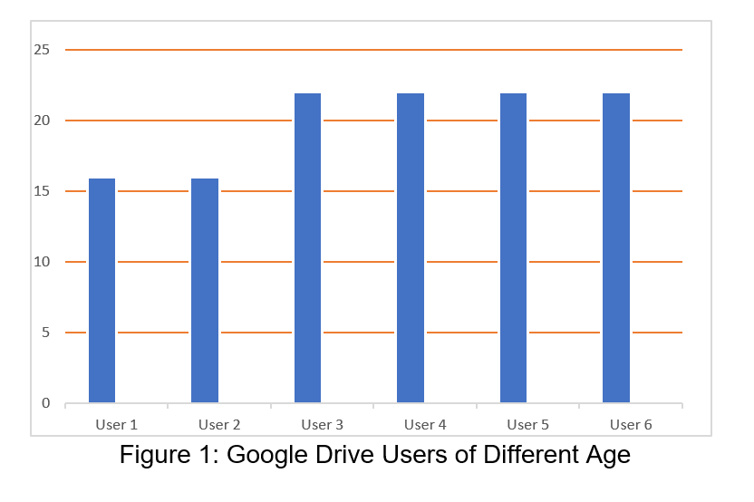

Currently, there are over 1 billion users on Google Drive and it is one of the most used file sharing and organization services in the world. However, because of its massive size and customer reach, any single small issue can potentially affect a large amount of people. Let’s say for example there is 1 fundamental problem with Google Drive, multiply that by 1 billion people and now there is effectively 1 billion problems with the system. Any change or improvement we can identify can help improve the usability and workflow for a large amount of people. Google Drive is straightforward to use but that does not mean that it cannot be better. So, we as a team decided to look at Google Drive from a CSCW perspective and focused on the organization, communication, and the workspace aspects of the platform to hopefully find better solutions to these problems.
Google Drive primarily functions as a cloud-based file management system used for storing and sharing files. In addition to its file management capabilities, Google Drive contains integrated CSCW features that enable multiple people to work together under a “Shared Drive” which was recently renamed from “Team Drive”. Despite Google’s efforts to better support computer-supported cooperative work, there are still areas that can be improved.
Below are some areas of Google Shared Drives that we believe are missing in terms of computer-supported cooperative work. The lack of these features lead to workflow disruptions and prevent people from using the system efficiently:
Google Drive has been playing an increasingly larger role in how people and organizations function and operate, we wanted to know what organizational features on google drive makes users having difficulty using it. For example, it does not have any categorical sorting by file type. Everything is just dumped into a folder making it difficult to stay organized when working with a larger group. Although to look for a specific file we can input a file type query (e.g. pdf) into the search bar and it will display files of that type, it is not perfect - it still shows other file types.
We also wanted to know that instead of using another form of communication, if we can have any feature inside google team drive that can allow a team to communicate easily back and forth.
Another area that we focused on was in Google Drive’s home page where there is a lack of workspace awareness. Currently there is no visual indicator that shows currently who is working on what within the Shared Drive’s home page. There is a way to see if someone is currently working on a file but that requires manually checking each individual file which takes a lot of time and clicks to achieve.
This study helps us not only understand these problems better but can also help us ideate solutions for these problems. For now our ideas are just theoretical and based on our team’s experience with Google Drive. Further research on this topic will give us a larger set of data to analyze from.
We started our research off by observing our own group. Throughout this quarter we used Google Drive to collaborate on our project and through our own experiences, we were able to analyze the system and how it worked for us as a CSCW system. Through observing each other using Google Drive, we noticed we came across a few issues with Google Drive that we believed could be improved upon. Evaluating our experience, allowed us to question if the issues we faced was common to other users utilizing Google Drive as a collaborative system. Therefore, for this research, interviews were used as a method for gathering information (specifically qualitative data), since the details of the frustrations that people had felt with Google Drive would be important for our findings. Everyone from the group was required to interview at minimum 1 person who uses Google Drive relatively often (one member had conducted an extra interview, totaling 6 interviews conducted).
For the interview, we had compiled 5 questions about Google Drive in regards to cooperation/CSCW, including communication and workspace awareness. The questions were presented in a way to explicitly detail their gripes with aspects of Google Drive. From there, they would also make recommendations as to possible resolutions for the problems presented. The analysis of these interviews would be finding the major commonality to each question and seeing why all of them feel this way and drawing conclusions based on their details.
As we expected, Google Drive is a popular collaborative tool in the world. Most of our interviewees did not feel that there was any deficiency in Google Drive until we pointed it out. After perceiving each of the interview questions, the interviewees realized that they felt like they do not know Google Drive the way they used to feel. The findings of the research depended on various kinds of factors such as interviewees’ age, status, personal experiences, etc. Figure 1 below is a graphical report demonstrating the interviewees’ personal data.
Our first two interviewees or user 1 and user 2 both were sixteen years old. They are high school students. Both of them found no awkwardness on Google Drive and can assuredly rely on Google Drive. When asked if they find that Google Drive needs another form of communication tool outside of it to help people working in different locations, both provided different answers. User 2 agreed while user 1 did not. User 1 had more experience of using Google Drive than user 2. She stated that there is already a chat and comment feature in every Google Doc. She found it unnecessary to have another form of communication tool. However, both user 1 and user 2 agreed on having a better feature to categorize documents since this problem can be easily noticed by anyone, even for a new user. While asking about the failure of workspace awareness in Google’s Team Drive, user 2 did not know what Team Drive is, as high school students do not use this feature. User 1 did agree on the problem of lack of workspace awareness and suggested a notification system to solve this collaboration problem.
On the other hand, user 3, 4, 5, 6 are all college students. They are more experienced users of Google Drive than user 1 and user 2. User 3 and 4 found some problems in it, such as a security issue, link sharing, downloading Zip files, etc. All the users, 3, 4, 5, and 6, felt the necessity of having a communication tool inside Google Drive. One of the users suggested having a feature on updating multiple files individually such as comment, tag, or direct line of communication to indicate which files are being modified by a user. According to him, this technique would prevent two users from editing the same file and uploading their changes, which would inevitably overwrite one user's modifications. Google Drive most likely has not implemented this feature yet because its initial focus was on personal backup and storage, not collaboration. Another user suggested adding a form of instant messaging such as the one already implemented when you click on a file to edit (e.g. Google Docs).
However, none of these college students find the lack of communication features an issue until we pointed it out. Most of the users felt the need for a notification or a tagging system on Google Drive. They suggested having some features which can design specific files for certain users or communicate with enough clarification about which files are currently being modified inside Google Drive to prevent any overwriting of work. Most of the suggested solutions we acquired from users are older and have more experience on Google Drive. By following the users’ suggestions, we created a user interface mock-up of the future version of Google Drive mentioned below in the appendix.